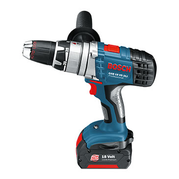
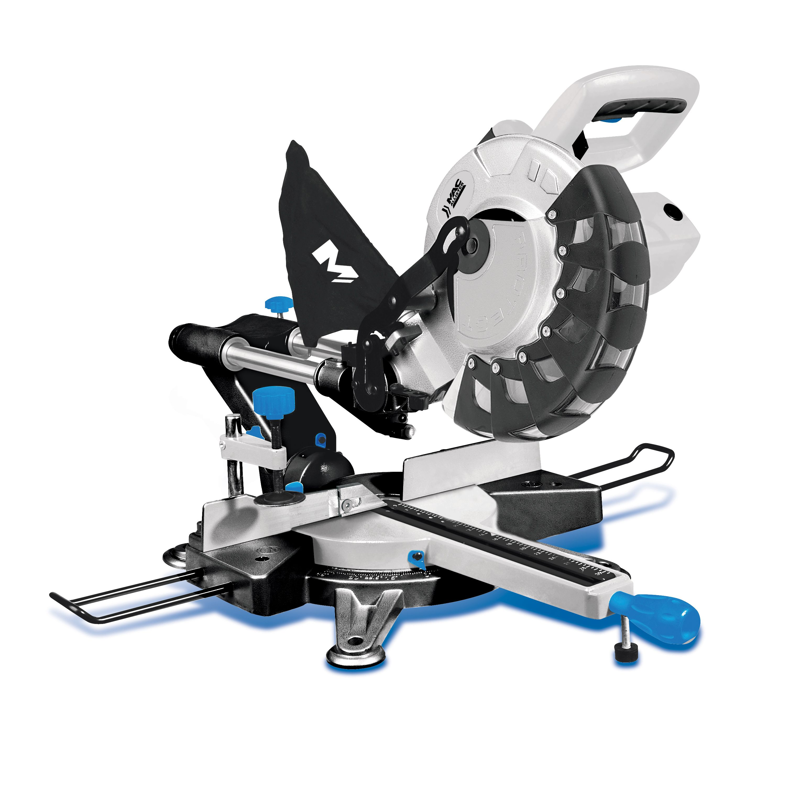
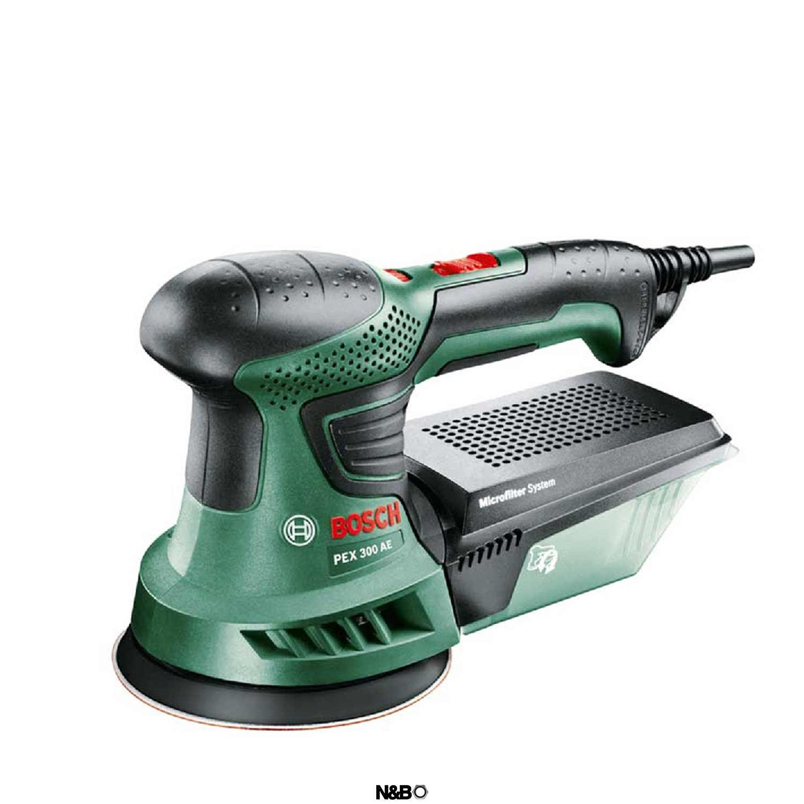
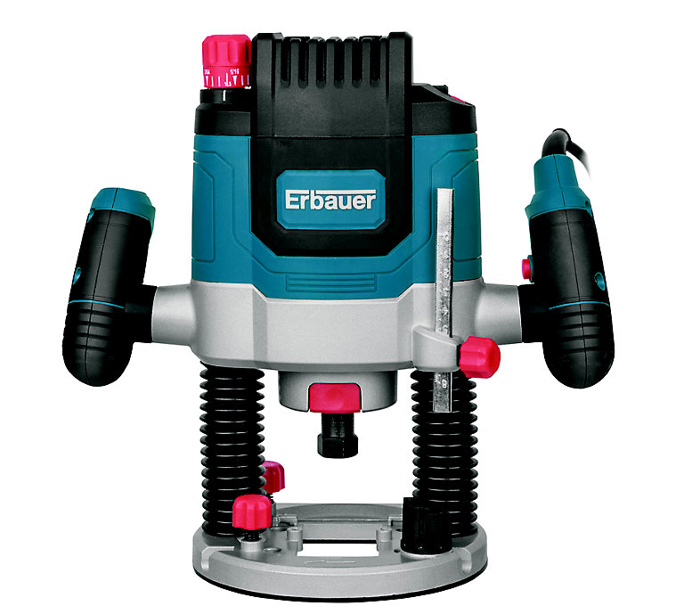
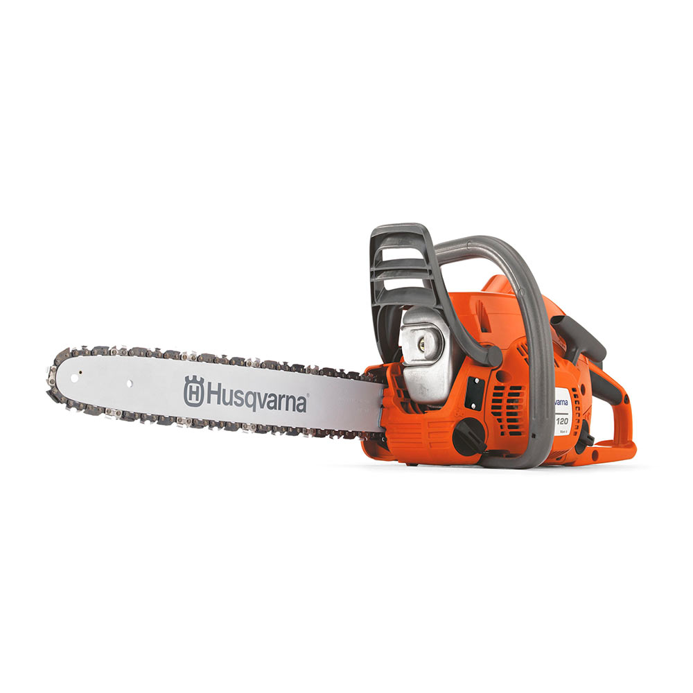
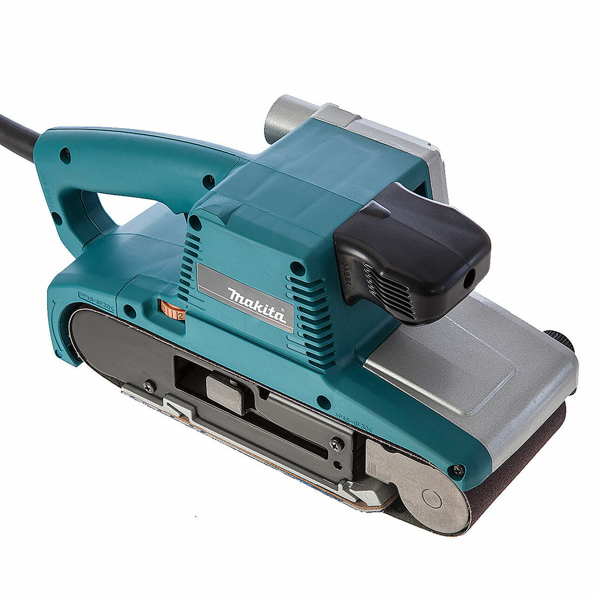
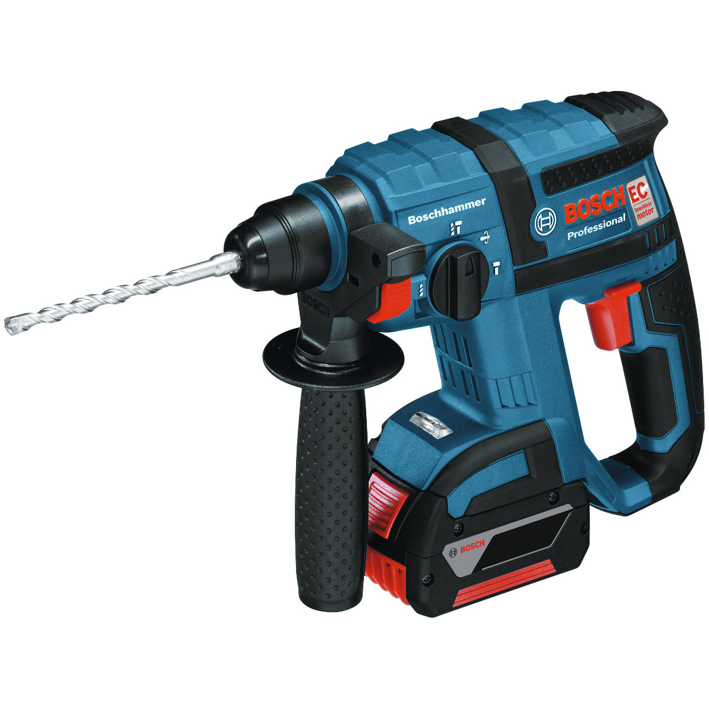

Use the tabs above to choose what you would like to do!
This is the shopping page. You can browse through the available items or search for a specific tool you want!
If you find a tool you wish to purchase or rent, you can contact the seller for their services by pressing the button!
- 
Name: Electric Drill
Owner: Craig David
Rent Price: £10/day
Buy Price: £35
Description: Great for all DIY / Home jobs with a large range of versatility. It is electrically powered so there is no need for wires. Comes in a compact, lightweight frame.
- Rechargeable Battery
- Speed and Torque Control
- Soft Grip Handle
- Universal Drill Pieces Included
×Seller : Craig David
Seller Email : c.david@qmul.ac.uk
Rent Price : £10/day
Buy Price : £35
- 
Name: Mitre Saw
Owner: Jon Sheercat
Rent Price: £20/day
Buy Price: £45
Description: This saw provides precision in both left and right hand compound cuts, cross cutting, bevels and mitres, on wood or plastic. It has great performance and dependable use.
- Quick release bevel setting provides accurate and simple setting of bevel angles up to 49° Left & Right
- am action mitre lock allows angle adjustments from 0° - 50° left and 0° - 60° right
- Easy to use mitre and bevel controls
- Large dual sliding fence providing maximum support in large material cuts
×Seller : Jon Sheercat
Seller Email : j.sheercat@qmul.ac.uk
Rent Price : £20/day
Buy Price : £45
- 
Name: Orbital Sander
Owner: Arthur O'Clarke
Rent Price: £15/day
Buy Price: £25
Description: Has a random orbital motion and rotation which allows the sander to function with great performance. Perfect for jobs such as woodwork, metalwork or body repairs. The handle has some slight wear and stiffness but functions the same.
- Pre-selected speed control to ensure correct speed before application
- Velcro-type fastening for changing of sanding sheets
- Sanding pad brake prevents damage / scoring on workpiece
×Seller : Arthur O'Clarke
Seller Email : a.oclarke@qmul.ac.uk
Rent Price : £15/day
Buy Price : £25
- 
Name: Router
Owner: Shirley Petti
Price: £12.50/day
Price: £35
Description: This product is ideal for clean and accurate results when cutting joints, grooves or creating mouldings. It has a quick release depth adjustment for enhanced mobility.
- Maximum plunge capacity 60mm
- Dust extraction facility
×Seller : Shirley Petti
Seller Email : s.petti@qmul.ac.uk
Rent Price : £12.50/day
Buy Price : £35
-
Name: Jigsaw
Owner: Ciara Alberts
Price: £8.50/day
Price: £20
Description: This is an adaptable electric saw that has simple and easy functionality. Perfect for quick straight or curved cutting on wood, plastic or metal.
- Fully adjustable base-plate angles
- Comes with a pack of interchangeable saw blades
×Seller : Ciara Alberts
Seller Email : c.alberts@qmul.ac.uk
Rent Price : £8.50/day
Buy Price : £20
-
Name: Angle-Grinder
Owner: Leutcoin Muhammad
Price: £14/day
Price: £30
Description: This tool is ideal for grinding / cutting metal or masonry. It is a versatile electric angle grinder fitted with an abrasive wheel. The cord is slightly on the shorter side but still has a great range of motion to it.
- Amazing for grinding, weld dressing and brick raking
- Comes with new Abrasive wheel attached
- Fitting of Abrasive wheels can only be conducted by authorised personnel, contact for more information
×Seller : Leutcoin Muhammad
Seller Email : l.muhammad@qmul.ac.uk
Rent Price : £14/day
Buy Price : £30
- 
Name: Chainsaw
Owner: Gregor Pace
Price: £50/day
Price: £100
Description: This is a high performance tool that is perfect for jobs in carpentry, contractors or tree surgery. Comes with extended cord and 14” head. Usage of this saw requires adequate training by law and this can be assessed upon contact.
- Features excellent ergonomics
- High chainspeed
- Brand new chain attached
×Seller : Gregor Pace
Seller Email : g.pace@qmul.ac.uk
Rent Price : £50/day
Buy Price : £100
- 
Name: Belt Sander
Owner: Vincent Melulle
Price: £14/day
Price: £28
Description: Great for sanding wood, plastic, painted surfaces or metal materials. Product allows for sanding flush to the wall with the nose and side of the sander with ease. It has a maximum speed of 440 m/min which is perfect for most home jobs.
- Variable speed controls
- Dust collection system
- Auto tracking belt system
- Comes with a 100mm belt
×Seller : Vincent Melulle
Seller Email : v.melulle@qmul.ac.uk
Rent Price : £14/day
Buy Price : £28
- 
Name: Rotary Hammer Drill
Owner: Wilson Bear
Price: £17/day
Price: £65
Description: This is a heavy duty drill that is ideal for drilling, chiselling and gouging out channels. It has an outstanding performance to weight ratio, making operation consistent.
- Ergonomic design enables maximum comfort during operation
- Drills holes of up to 32mm in diameter in both concrete and masonry
- Comes with singular 30mm drill piece
×Seller : Wilson Bear
Seller Email : w.bear@qmul.ac.uk
Rent Price : £17/day
Buy Price : £65